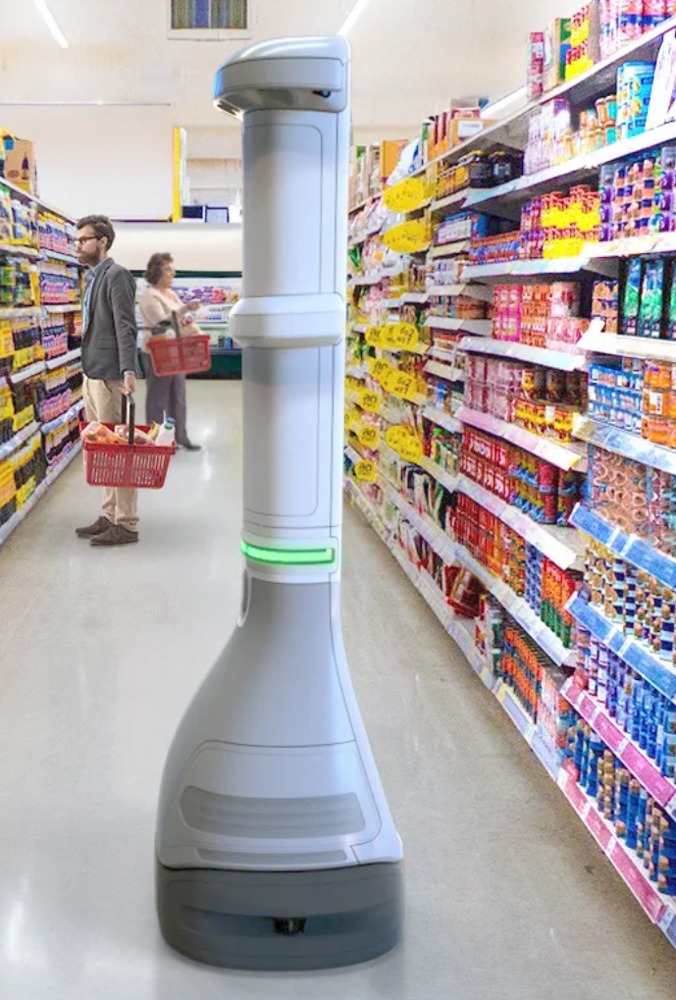
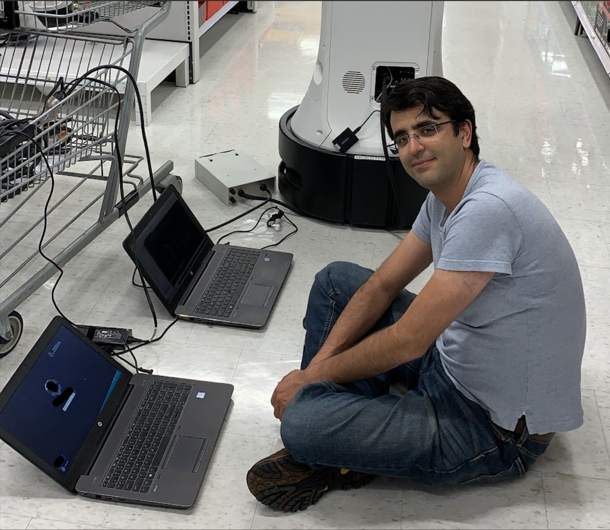

Zebra Retail Store and Warehouse Autonomous Robots
April 05, 2025
In 2018, I joined Zebra Technologies to develop autonomous robots for major retail stores and warehouses. The robot, later named Zebra Smart Sight, was designed to autonomously scan store shelves, collect inventory data, and report any necessary actions required to store management.
I developed the visual SLAM initially and then led a team to elevate it to a tightly coupled visual, lidar, and odometry SLAM. Later on, I joined the CV/AI team to work on object detection. This project was the most complex I have ever done: architecture and development of a tightly coupled multi-sensor SLAM solution.
Here is an image of the Zebra Smart Sight:
I spent many nights testing this robot in retail stores, as daytime testing would interfere with normal store operations. Below is a picture of me diagnosing a robot at 3 AM:
